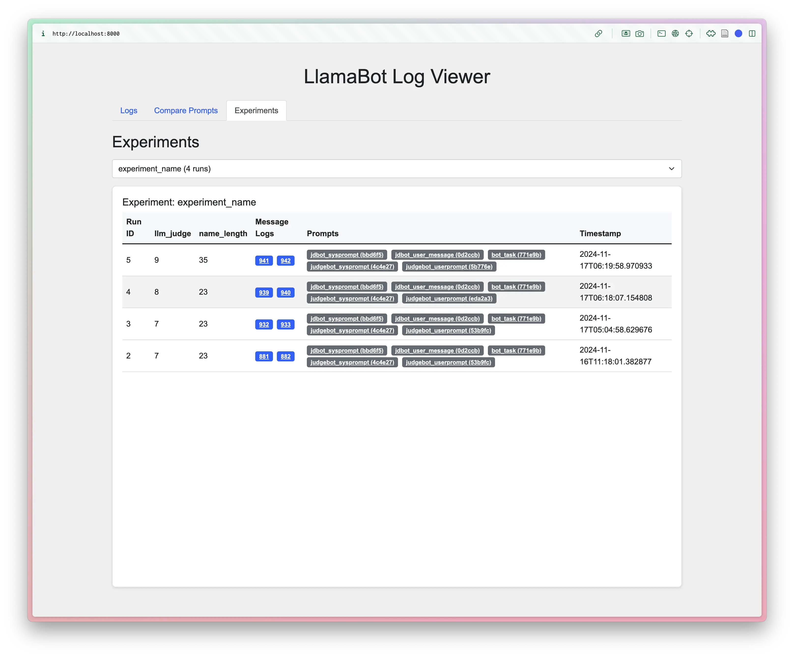

LlamaBot: A Pythonic bot interface to LLMs
LlamaBot implements a Pythonic interface to LLMs, making it much easier to experiment with LLMs in a Jupyter notebook and build Python apps that utilize LLMs. All models supported by LiteLLM are supported by LlamaBot.
Install LlamaBot
To install LlamaBot:
pip install llamabot==0.17.11
This will give you the minimum set of dependencies for running LlamaBot.
To install all of the optional dependencies, run:
pip install "llamabot[all]"
Get access to LLMs
Option 1: Using local models with Ollama
LlamaBot supports using local models through Ollama. To do so, head over to the Ollama website and install Ollama. Then follow the instructions below.
Option 2: Use an API provider
OpenAI
If you have an OpenAI API key, then configure LlamaBot to use the API key by running:
export OPENAI_API_KEY="sk-your1api2key3goes4here"
Mistral
If you have a Mistral API key, then configure LlamaBot to use the API key by running:
export MISTRAL_API_KEY="your-api-key-goes-here"
Other API providers
Other API providers will usually specify an environment variable to set. If you have an API key, then set the environment variable accordingly.
Option 3: Using local models with LMStudio
LlamaBot supports using local models through LMStudio via LiteLLM. To use LMStudio with LlamaBot:
- Install and set up LMStudio
- Load your desired model in LMStudio
- Start the local server in LMStudio (usually runs on
http://localhost:1234) - Set the environment variable for LMStudio's API base:
export LM_STUDIO_API_BASE="http://localhost:1234"
- Use the model with LlamaBot using the
lm_studio/prefix:
import llamabot as lmb
system_prompt = "You are a helpful assistant."
bot = lmb.SimpleBot(
system_prompt,
model_name="lm_studio/your-model-name" # Use lm_studio/ prefix
)
Replace your-model-name with the actual name of the model you've loaded in LMStudio. LlamaBot can use any model provider that LiteLLM supports, and LMStudio is one of the many supported providers.
How to use
Not sure which bot to use?
Check out the Which Bot Should I Use? guide to help you choose the right bot for your needs.
SimpleBot
The simplest use case of LlamaBot
is to create a SimpleBot that keeps no record of chat history.
This is effectively the same as a stateless function
that you program with natural language instructions rather than code.
This is useful for prompt experimentation,
or for creating simple bots that are preconditioned on an instruction to handle texts
and are then called upon repeatedly with different texts.
Using SimpleBot with an API provider
For example, to create a Bot that explains a given chunk of text like Richard Feynman would:
import llamabot as lmb
system_prompt = "You are Richard Feynman. You will be given a difficult concept, and your task is to explain it back."
feynman = lmb.SimpleBot(
system_prompt,
model_name="gpt-4.1-mini"
)
For using GPT, you need to have the OPENAI_API_KEY environment variable configured. If you want to use SimpleBot with a local Ollama model, check out this example
Now, feynman is callable on any arbitrary chunk of text and will return a rephrasing of that text in Richard Feynman's style (or more accurately, according to the style prescribed by the system_prompt).
For example:
prompt = """
Enzyme function annotation is a fundamental challenge, and numerous computational tools have been developed.
However, most of these tools cannot accurately predict functional annotations,
such as enzyme commission (EC) number,
for less-studied proteins or those with previously uncharacterized functions or multiple activities.
We present a machine learning algorithm named CLEAN (contrastive learning–enabled enzyme annotation)
to assign EC numbers to enzymes with better accuracy, reliability,
and sensitivity compared with the state-of-the-art tool BLASTp.
The contrastive learning framework empowers CLEAN to confidently (i) annotate understudied enzymes,
(ii) correct mislabeled enzymes, and (iii) identify promiscuous enzymes with two or more EC numbers—functions
that we demonstrate by systematic in silico and in vitro experiments.
We anticipate that this tool will be widely used for predicting the functions of uncharacterized enzymes,
thereby advancing many fields, such as genomics, synthetic biology, and biocatalysis.
"""
feynman(prompt)
This will return something that looks like:
Alright, let's break this down.
Enzymes are like little biological machines that help speed up chemical reactions in our
bodies. Each enzyme has a specific job, or function, and we use something called an
Enzyme Commission (EC) number to categorize these functions.
Now, the problem is that we don't always know what function an enzyme has, especially if
it's a less-studied or new enzyme. This is where computational tools come in. They try
to predict the function of these enzymes, but they often struggle to do so accurately.
So, the folks here have developed a new tool called CLEAN, which stands for contrastive
learning–enabled enzyme annotation. This tool uses a machine learning algorithm, which
is a type of artificial intelligence that learns from data to make predictions or
decisions.
CLEAN uses a method called contrastive learning. Imagine you have a bunch of pictures of
cats and dogs, and you want to teach a machine to tell the difference. You'd show it
pairs of pictures, some of the same animal (two cats or two dogs) and some of different
animals (a cat and a dog). The machine would learn to tell the difference by contrasting
the features of the two pictures. That's the basic idea behind contrastive learning.
CLEAN uses this method to predict the EC numbers of enzymes more accurately than
previous tools. It can confidently annotate understudied enzymes, correct mislabeled
enzymes, and even identify enzymes that have more than one function.
The creators of CLEAN have tested it with both computer simulations and lab experiments,
and they believe it will be a valuable tool for predicting the functions of unknown
enzymes. This could have big implications for fields like genomics, synthetic biology,
and biocatalysis, which all rely on understanding how enzymes work.
Using SimpleBot with a Local Ollama Model
If you want to use an Ollama model hosted locally, then you would use the following syntax:
import llamabot as lmb
system_prompt = "You are Richard Feynman. You will be given a difficult concept, and your task is to explain it back."
bot = lmb.SimpleBot(
system_prompt,
model_name="ollama_chat/llama2:13b"
)
Simply specify the model_name keyword argument following the <provider>/<model name> format. For example:
ollama_chat/as the prefix, and- a model name from the Ollama library of models
All you need to do is make sure Ollama is running locally;
see the Ollama documentation for more details.
(The same can be done for the QueryBot class below!)
The model_name argument is optional. If you don't provide it, Llamabot will try to use the default model. You can configure that in the DEFAULT_LANGUAGE_MODEL environment variable.
SimpleBot with memory for chat functionality
If you want chat functionality with memory, you can use SimpleBot with ChatMemory. This allows the bot to remember previous conversations:
import llamabot as lmb
# Create a bot with memory
system_prompt = "You are Richard Feynman. You will be given a difficult concept, and your task is to explain it back."
# For simple linear memory (fast, no LLM calls)
memory = lmb.ChatMemory()
# For intelligent threading (uses LLM for smart connections)
# memory = lmb.ChatMemory.threaded(model="gpt-4o-mini")
feynman = lmb.SimpleBot(
system_prompt,
memory=memory,
model_name="gpt-4.1-mini"
)
# Have a conversation
response1 = feynman("Can you explain quantum mechanics?")
print(response1)
# The bot remembers the previous conversation
response2 = feynman("Can you give me a simpler explanation?")
print(response2)
The ChatMemory system provides intelligent conversation memory that can maintain context across multiple interactions. It supports both linear memory (fast, no LLM calls) and graph-based memory with intelligent threading (uses LLM to connect related conversation topics).
Note: For RAG (Retrieval-Augmented Generation) with document stores, use QueryBot with a document store instead of SimpleBot with memory. SimpleBot's memory parameter is specifically for conversational memory, while QueryBot is designed for document retrieval and question answering.
For more details on chat memory, see the Chat Memory component documentation.
ToolBot
ToolBot is a specialized bot designed for single-turn tool execution and function calling. It analyzes user requests and selects the most appropriate tool to execute, making it perfect for automation tasks and data analysis workflows.
import llamabot as lmb
from llamabot.components.tools import write_and_execute_code
# Create a ToolBot with code execution capabilities
bot = lmb.ToolBot(
system_prompt="You are a data analysis assistant.",
model_name="gpt-4.1",
tools=[write_and_execute_code(globals_dict=globals())],
memory=lmb.ChatMemory(),
)
# Create some data
import pandas as pd
import numpy as np
data = pd.DataFrame({
'x': np.random.randn(100),
'y': np.random.randn(100)
})
# Use the bot to analyze the data
response = bot("Calculate the correlation between x and y in the data DataFrame")
print(response)
ToolBot is ideal for: * Data analysis workflows where you need to execute custom code * Automation tasks that require specific function calls * API integrations that need to call external services * Single-turn function calling scenarios
QueryBot
QueryBot lets you query a collection of documents. QueryBot now works with a docstore that you create first, making it more modular.
Here's how to use QueryBot with a docstore:
import llamabot as lmb
from pathlib import Path
# First, create a docstore and add your documents
docstore = lmb.LanceDBDocStore(table_name="eric_ma_blog")
docstore.add_documents([
Path("/path/to/blog/post1.txt"),
Path("/path/to/blog/post2.txt"),
# ... more documents
])
# Then, create a QueryBot with the docstore
bot = lmb.QueryBot(
system_prompt="You are an expert on Eric Ma's blog.",
docstore=docstore,
# Optional:
# model_name="gpt-4.1-mini"
# or
# model_name="ollama_chat/mistral"
)
result = bot("Do you have any advice for me on career development?")
You can also use an existing docstore:
import llamabot as lmb
# Load an existing docstore
docstore = lmb.LanceDBDocStore(table_name="eric_ma_blog")
# Create QueryBot with the existing docstore
bot = lmb.QueryBot(
system_prompt="You are an expert on Eric Ma's blog",
docstore=docstore,
# Optional:
# model_name="gpt-4.1-mini"
# or
# model_name="ollama_chat/mistral"
)
result = bot("Do you have any advice for me on career development?")
For more explanation about the model_name, see the examples with SimpleBot.
StructuredBot
StructuredBot is designed for getting structured, validated outputs from LLMs. Unlike SimpleBot, StructuredBot enforces Pydantic schema validation and provides automatic retry logic when the LLM doesn't produce valid output.
import llamabot as lmb
from pydantic import BaseModel
from typing import List
class Person(BaseModel):
name: str
age: int
hobbies: List[str]
# Create a StructuredBot with your Pydantic model
bot = lmb.StructuredBot(
system_prompt="Extract person information from text.",
pydantic_model=Person,
model_name="gpt-4o"
)
# The bot will return a validated Person object
person = bot("John is 25 years old and enjoys hiking and photography.")
print(person.name) # "John"
print(person.age) # 25
print(person.hobbies) # ["hiking", "photography"]
StructuredBot is perfect for: * Data extraction from unstructured text * API responses that need to match specific schemas * Form processing with validation * Structured outputs for downstream processing
ImageBot
With the release of the OpenAI API updates, as long as you have an OpenAI API key, you can generate images with LlamaBot:
import llamabot as lmb
bot = lmb.ImageBot()
# Within a Jupyter/Marimo notebook:
url = bot("A painting of a dog.")
# Or within a Python script
filepath = bot("A painting of a dog.")
# Now, you can do whatever you need with the url or file path.
If you're in a Jupyter/Marimo notebook, you'll see the image show up magically as part of the output cell as well.
Working with images and user input
You can easily pass images to your bots using lmb.user() with image file paths.
This is particularly useful for vision models that can analyze, describe, or answer questions about images:
import llamabot as lmb
# Create a bot that can analyze images
vision_bot = lmb.SimpleBot(
"You are an expert image analyst. Describe what you see in detail.",
model_name="gpt-4o" # Use a vision-capable model
)
# Pass an image file path using lmb.user()
response = vision_bot(lmb.user("/path/to/your/image.jpg"))
print(response)
# You can also combine text and images
response = vision_bot(lmb.user(
"What colors are prominent in this image?",
"/path/to/your/image.jpg"
))
print(response)
The lmb.user() function automatically detects image files (PNG, JPG, JPEG, GIF, WebP)
and converts them to the appropriate format for the model.
You can use local file paths or even image URLs.
Developer Messages with lmb.dev()
For development and debugging scenarios, you can use lmb.dev() to create developer messages that provide context about code changes, debugging instructions, or development tasks:
import llamabot as lmb
# Create a bot for code development
dev_bot = lmb.SimpleBot(
"You are a helpful coding assistant. Help with development tasks.",
model_name="gpt-4o-mini"
)
# Use dev() for development context
response = dev_bot(lmb.dev("Add error handling to this function"))
print(response)
# Combine multiple development instructions
response = dev_bot(lmb.dev(
"Refactor this code to be more modular",
"Add comprehensive docstrings",
"Follow PEP8 style guidelines"
))
print(response)
When to use lmb.dev():
* Development tasks: Code refactoring, debugging, testing
* Code review: Providing feedback on code quality
* Documentation: Adding docstrings, comments, or README updates
* Debugging: Describing issues or requesting fixes
Message Type Hierarchy:
* lmb.system() - Bot behavior and instructions
* lmb.user() - User input and questions
* lmb.dev() - Development context and tasks
Experimentation
Automagically record your prompt experimentation locally on your system
by using llamabot's Experiment context manager:
import llamabot as lmb
@lmb.prompt("system")
def sysprompt():
"""You are a funny llama."""
@lmb.prompt("user")
def joke_about(topic):
"""Tell me a joke about {{ topic }}."""
@lmb.metric
def response_length(response) -> int:
return len(response.content)
with lmb.Experiment(name="llama_jokes") as exp:
# You would have written this outside of the context manager anyways!
bot = lmb.SimpleBot(sysprompt(), model_name="gpt-4o")
response = bot(joke_about("cars"))
_ = response_length(response)
And now they will be viewable in the locally-stored message logs:

CLI Demos
Llamabot comes with CLI demos of what can be built with it and a bit of supporting code.
And here is one where I use llamabot's SimpleBot to create a bot
that automatically writes commit messages for me.

Contributing
New features
New features are welcome! These are early and exciting days for users of large language models. Our development goals are to keep the project as simple as possible. Features requests that come with a pull request will be prioritized; the simpler the implementation of a feature (in terms of maintenance burden), the more likely it will be approved.
Bug reports
Please submit a bug report using the issue tracker.
Questions/Discussions
Please use the issue tracker on GitHub.
Contributors
 Rena Lu 💻 |
 andrew giessel 🤔 🎨 💻 |
 Aidan Brewis 💻 |
 Eric Ma 🤔 🎨 💻 |
 Mark Harrison 🤔 |
 reka 📖 💻 |
 anujsinha3 �� 📖 |
 Elliot Salisbury 📖 |
 Ethan Fricker, PhD 📖 |
 Ikko Eltociear Ashimine 📖 |
 Amir Molavi 🚇 📖 |